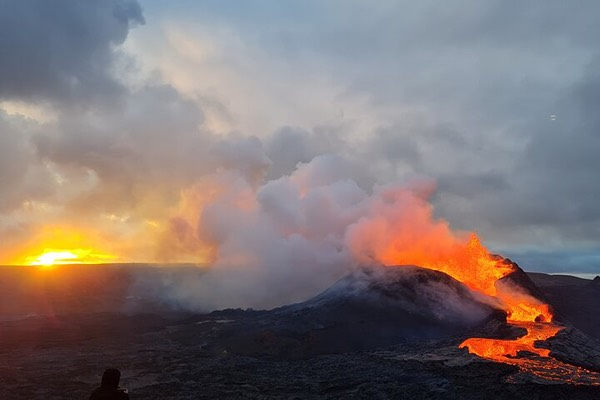
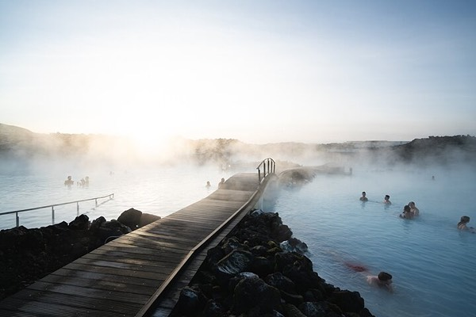
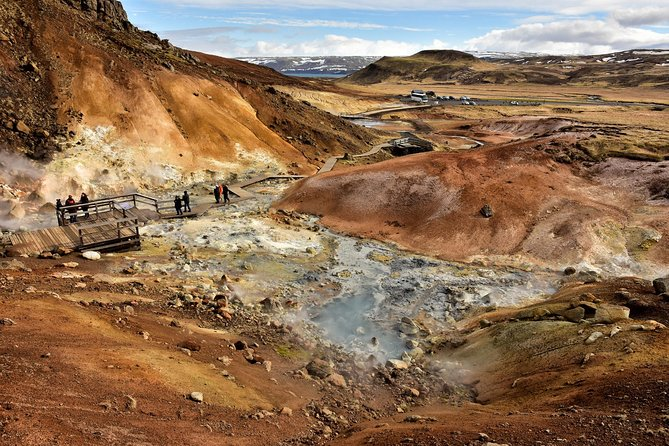

If you love nature and the outdoors Iceland has the perfect activities for you!
Volcano Hike
Life is all about timing, nad on this small-group tour from Reykjavik, you'll hike up to Iceland's newest volcano. But not by yourself—you'll be in the company of a geologist/volcanologist guide, learning all about the 2021 eruption at Fagradalsfjall. At the lava field, witness the forming of new land and learn how the composition of the lava influences the appearance of the rocks. From the crater viewpoint, you'll get excellent views of the lava field and the surrounding area, witnessing creation.
Blue Lagoon
If you're short on time, you can still discover Iceland's natural wonders in one epic day. On this tour, you'll journey through the legendary Golden Circle, where you'll witness the ancient, continent-splitting grounds of Thingvellir, the raw power of Geysir's steaming eruptions, and Gullfoss waterfall's thundering cascade. Marvel at Kerid's crimson crater lake before ending your adventure with a therapeutic dip in the Blue Lagoon's ethereal waters—and only-in-Iceland adventure.
Reykjanes Geopark
Cross tectonic plates at the famous “bridge between the continents” on a day trip to the UNESCO-listed Reykjanes Peninsula. This minibus tour takes you to volcanic craters, turquoise lakes, geothermal mud pools, and an iconic lighthouse—all ideal for photo opportunities. Plus, a guided tour lets you escape the city without the hassle of renting a car or planning a trip.